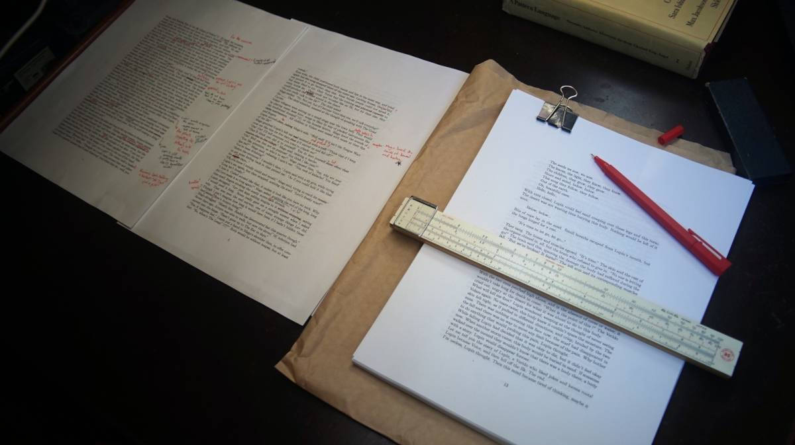
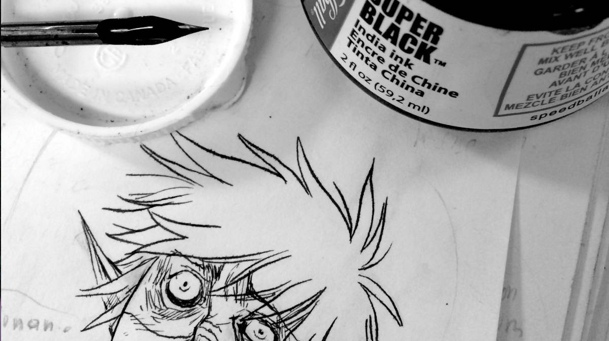
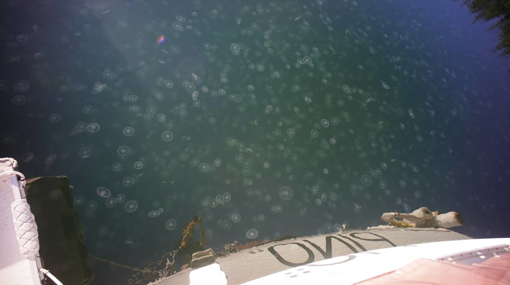
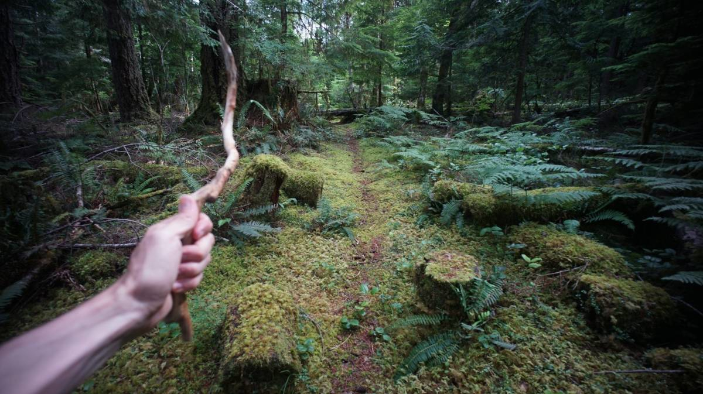
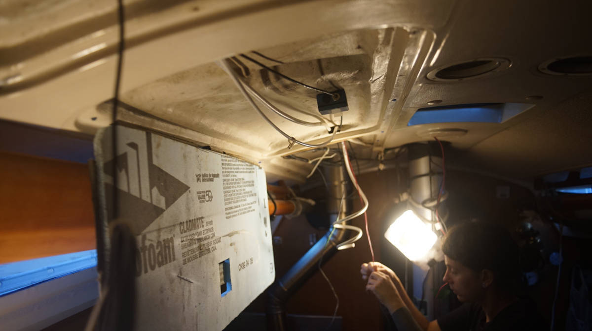

About
About Projects
Projects Books
Books Games
Games Stories
Stories Store
Store Collection
Collection Notes
Notes2022

I never liked staying up late to celebrate the New Year. So this year we started to do something different. We got up in the dark, early, and walked near the water to get a good view of the east. Our goal was to catch the very first sunrise of 2022, a practice in Japan called "Hatsuhinode", or "the first sunrise".
It was beautiful out, tranquil, and white because of the recent snowfall. We walked down a hill to get near the water, the snow had been smoothed out by a hundred sleds the previous day. All along the hill, and at the bottom, we saw pieces of broken plastic sleds, deflated donuts, trash cans full of cheap, dead, frost-bitten single-use snow-day accessories, fun until they break(they always do). I saw lonely mittens and jackets too. On the walk down I spotted a water bottle in the snow. I screamed when I saw it, it was the same model as the one I lost at sea in 2020. The bottle had been tucked into the dodger pocket, the dodger that was ripped off the deck after the wave event of June 2020. I loved that bottle, and there in my hands was its twin. I was selfish that day, I decided to take it home rather than to leave it for its owner to find.
In early January, like many others, I had some pandemic fatigue. Sick of the anger, sick of the stress, and the growing distance between people. In mid-December we went out to a pub, our first social outing since arriving back from japan by sailboat. We went with our friends Lloyd and Peter from the marina, Lloyd's friend Pamela was visiting at the time and came with us. We drank too much, played games, laughed and enjoyed ourselves. I craved this sort of activity, desperately. This is the sort of thing I wanted to experience after returning from our circumnavigation of the Pacific. We made plans then to continue to play games together, but then came Omicron, and with it more restrictions. The pubs closed, and we had to put a pause on game nights. We were back to our micro-communities again, which in our case reduced our roaming range to Pino's interior. I'm glad we got to have an evening like that at all, but I also hope we can get to do more with others soon.
I signed up for a basic first aid course, something I ought to have done prior to us leaving to go offshore in 2016. I passed the course and acquired a new (and better) med-kit for Pino, and learned how difficult it is to do CPR. After hearing of the many ways that humans can get hurt, I walked away from that course feeling very fragile. I wrote about what I learned on anything medical for 100r, see also how to build a good med-kit. A month later, I participated in a course for diesel engine maintenance. I graduated, feeling more confident in my ability to maintain our little engine. With such machinery, most problems arise due to lack of maintenance and are entirely preventable. CalciferII performed well all year, propelling us in into port when wind could not. I wrote a diesel engine care guide afterward, sharing what I learned during the course.
In February I finished writing wiktopher, and began formatting the story for print. Later in August, I printed the book on paper and Devine started making corrections. Devine goes through each chapter, writing in the margins, and reads it back to me, we discuss changes and then I apply these changes to my digital copy-so far so good. I announced that the book would be finished in the summer, but I understimated how long it would take us to go through the entire text. Devine makes corrections when time allows, between other projects. As of now, the book is still being edited.
Summer 2022 was the best summer I've had in years, where I indulged in drawing on paper all day for 3 whole months. It is the first summer where we don't have to do any intense boat work, and that we aren't traveling out of necessity (following seasons to stay safe).
I filled an entire sketchbook. After a time, the binding struggled to contain all the extra pieces of paper I had nested between its pages. I started inking with a dip pen and ink again, and absolutely love it... the sound, the look, everything. As of now, I am still busy processing all of the drawings. The new project name is hakum. Because I have a history of not finishing comics, I've decided on a very loose release format. The goal is to keep myself happy, to work on what I feel like rather than forcing myself to start at the beginning. The more sequences I finish, the more the story comes together. This is 100% for me, drawing comics made me happy as a kid and I'm looking to get some of that back. Working on this story animates me like nothing else. Working on this project deepened by interest in asl and Hand Speak, I've been teaching myself on the side.
We took Pino north to Desolation Sound. It was my first time swimming in British Columbia. The waters of Desolation Sound lie at the convergence of the tidal flow from both the northern and southern ends of Vancouver Island, because there is less tidal exchange the water is more stationary, which gives the summer sun plenty of time to warm it up. We arrived up there in early May, and stayed until early August. We got to experience the rapid warming of the water first hand. We spent a lot of time in Melanie Cove, a bay teeming with jellyfish. In the colder months, they rise to the surface, but as the water warms they recede and stay a few feet below in the colder layer.
We enjoyed walking in the woods on Cortes Island, the trails are lovely and unspoiled (we spent a month there). Devine & I would row to shore and spend the afternoon exploring, digesting the work we'd done that morning. We'd make suggestions to each other, sometimes finding solutions to problems, sometimes not, and that too was okay.
On our return south in the Gulf Islands in mid-August, we spent a few weeks anchored in Galiano. Because we stayed there so long, we got to know some locals and learned more about the island. I falsely assumed that the majority of those living in the Gulf Islands were older and wealthy, people that undoubtedly owned multiple homes, but the island also has a younger, welcoming, and active creative community. It is difficult for me to trust the new people that I meet, I want to, but it doesn't come easy... it felt a bit easier with them. I did not open up fully, I hardly ever do, but I hope to when we spend more time there in 2023.
We returned to our spot in the Victoria Inner Harbour in October, and quickly signed up to local fruit picks to make apple jam. I was never a huge fan of asian pears before, but I tasted hosui pears for the first time and holy crap is it good...! I filled my bag with fruit. It was so heavy that I could not cycle up hills (I had to step off my bike). Hosui pears have a short shelf life, we ate a lot of the fresh fruit, and added some to jars of sauerkraut (tasted it, was amazing), the rest we gave away to friends in the marina. I processed all of the picked apples and made 12 jars of jam (we'll see how long that lasts).

With the coming of colder weather, we started re-doing all of Pino's wiring, a project that's been long overdue. As of now, we've redone most of the DC side of the wiring. I was afraid of taking this on because I feared I didn't know enough to do a good job, but like with anything, as I start tinkering I begin to understand. It feels so good when things start making sense. Devine & I had to press pause on the re-wiring when I got sick with covid (for the first time ever).
To end, I'll say that my favorite book of the year was Watership Down by Richard Adams. I have very fond memories of reading this aloud to Devine, while at anchor in Desolation Sound on quiet summer evenings. I also really loved We Have Always Lived at the Castle by Shirley Jackson. My most surprising read was Gulliver's Travels by Jonathan Swift, I did not expect to enjoy ityea this much, in fact Devine & I are still talking about the chapter with the Houyhnhnms. My favorite film watched this year was Omoide Poro Poro.
Resume of the year
- Released thousand rooms in Serbian, and Catalan
- Virtual Pet Jam entry called yufo
- Switched to Manjaro(i3)
- Released 2 recipes on grimgrains.
- Filled a whole sketchbook with art for the first time in years
- Got marine basic first aid certification
- Completed diesel engine maintenance course
- FSF living liberation talk (see fsf talk) in March
- NIME 2022 Keynote talk in July
- Started project hakum, released 29 comic pages in 2022
- Sailed to Desolation Sound for the first time
- Completed a video on Image Optimization for Green Hacks
2022 reading list
- Le Petit Prince, Antoine de St-Exupéry [5/5]
- How to Blow Up a Pipeline, Andreas Malm [-]
- Gulliver's Travels, Jonathan Swift [4.4/5]
- Life, the Universe, and Everything, Douglas Adams [3/5]
- Restaurant at the End of the Universe, Douglas Adams [2.5/5]
- The Hitchhiker's Guide to the Galaxy, Douglas Adams [3/5]
- The Man Who Mistook his Wife for a Hat, Oliver Sacks [4.1/5]
- Watership Down, Richard Adams [5/5]
- We Have Always Lived in the Castle, Shirley Jackson [5/5]
- The Complete Cosmicomics, Italo Calvino [3.4/5]
- Underland, Robert Macfarlane [3/5]
- Fresh: A Perishable History, Susanne Freidberg [3/5]
- A Beginner's Guide to Japan, Pico Iyer [4.5/5]
- The Girl with the Dragon Tattoo, Stieg Larsson [?/5. Couldn't finish, too graphic]
2022 watched movies/series list
- Don't Look up, [3/5]
- Suspiria, [3.5/5]
- Gwoemul(the host), [3.5/5]
- Kaamelott: Le Premier Volet, [3.8/5]
- A Discovery of Witches, [2.8/5]
- Sicario Day of the Soldado, [2/5]
- Red Rocket, [4/5]
- Nightmare Alley, [2.5/5]
- Macross plus, [3.9/5]
- King Richard, [2.5/5]
- The Strain(tv series), [3.4/5]
- Omoide Poro Poro(Only Yesterday), [4.9/5]
- My Neighbors the Yamadas, [4.8/5]
- Drive My Car, [4/5]
- Our Flag Means Death, [4.5/5]
- Shadow(2018), [3/5]
- Our Flag Means Death, [4.6/5]
- The Thirteenth Floor, [3.6/5]
- 12 Monkeys, [4.5/5]
- Everything, everyhere all at once, [4.8/5]
- Triangle Of Sadness, [4.2/5]
- Force Majeure, [4.3/5]
- Three Thousand Years of Longing, [2.8/5]
Go back to yearly reviews